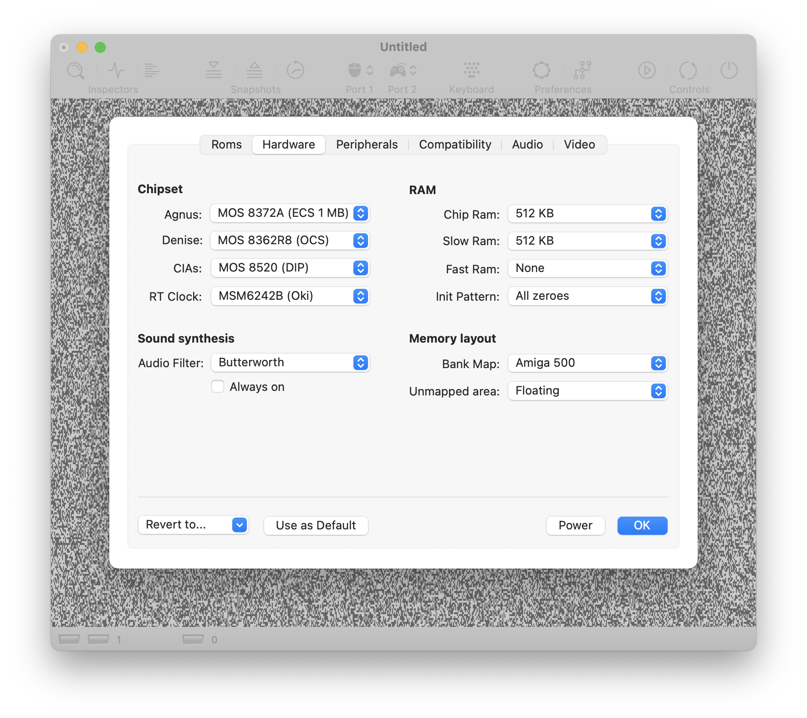

Hardware settings
Agnus
Agnus is part of the Amiga custom chip set. It is undoubtedly the most significant custom chip as it controls the interaction of all other components. I.e., every DMA access is done by this chip. Besides the classic OCS Agnus, vAmiga is able to emulate two variants of the more advanced ECS Agnus, which is often referred to as "Fat Agnus". Apart from several minor details, the Agnus variants mainly differ in the size of the addressable memory. While the OCS model can address 512 KB of chip RAM, the two ECS models grant access to 1 MB and 2 MB, respectively.
Denise
Denise is the video chip of the Amiga. All three classic Amiga are equipped with the OCS revision of this chip. If you own an Amiga 3000 or an Amiga 500+, your computer contains the enhanced chip set (ECS) instead, including the new more advances HiRes Denise. It supports additional graphics modes and features a more advanced sprite unit. At present, this chip is not supported by vAmiga, leaving OCS Denise as the only choice.
There is one exception, though. ECS Denise has a feature called "Border Blank" which causes the border to be drawn in black instead of the current background color. Some games use this functionality to surround the drawing area with a nicer looking frame. If you wish to emulate this feature in vAmiga, you can select revision OCS + BRDRBLNK instead of the default setting.
CIAs
The Amiga utilises CIAs of type MOS 8520 to interact with peripheral devices. These chip are similar to the well-known MOS 6526 chips which were used in the C64. There are subtle differences, though. For example, Commodore has replaced the TOD clock with a native 24-bit counter and implemented an autostart mechanism for the CIA timers. vAmiga supports emulation of two MOS 8520 models: DIP and PLCC. The DIP models are the default option since they were used in all classic Amigas.
RT clock
If you owned an Amiga 500 like me and extended it with a Trapdoor memory card, you most likely had a real-time clock installed, too. At that time, RTCs were part of many memory expansion cards. They can be easily recognized by the battery, which is required to keep the register contents alive. In the Amiga 2000, the real-time clock was installed directly on the motherboard. vAmiga supports two common types of real-time clocks: The Oki MSM6242B which had been used in the Amiga 2000 and the Ricoh RF5C01A which Commodore used in later models.
Emulate Slow-Ram bus delays
On a real Amiga, the CPU requires a free DMA cycle to access Slow Ram. Hence the name Slow Ram. Disabling this option removes this restriction, allowing the CPU to access Slow Ram at the same speed as Fast Ram.
Chip Ram, Slow Ram, Fast Ram
The three Ram options determine the amount of Ram in your virtual Amiga. Chip RAM refers to the factory-installed memory which is located on the motherboard. Slow RAM refers to extended memory. In the case of the Amiga 500, this memory was installed by inserting a memory expansion card into the trapdoor slot on the bottom of the computer case. Back in the day, 512 KB Chip RAM and 512 KB Slow RAM was a common configuration.
Independent of the selected amount of Chip and Slow RAM, you may optionally add up to 8 MB of Fast Ram. The default setting is 0 KB, because some Amiga programs fail to work if Fast Ram is present.
Init pattern
The init pattern determines how memory should be initialised on startup. You may choose between random values, all zeroes, or all ones.
Bank map
The bank map determines the memory area where specific components are mapped in or mirrored to. Mirroring means that we can access one and the same target, e.g. a custom chip register, through several different addresses. A programmer could therefore just as well use an address from the mirrored area instead of the officially documented one, and many programmers did. Unfortunately, the mirrored areas are not the same in all Amiga models. This means that we are confronted with a number of different memory layouts, and we need to tell the emulator which memory layout to use.
Unmapped memory
This option tells vAmiga which values should be put on the data bus if an unmapped memory location is accessed. Besides telling vAmiga to leave the data bus in a floating state, you may choose to return all zeroes or all ones in this case.